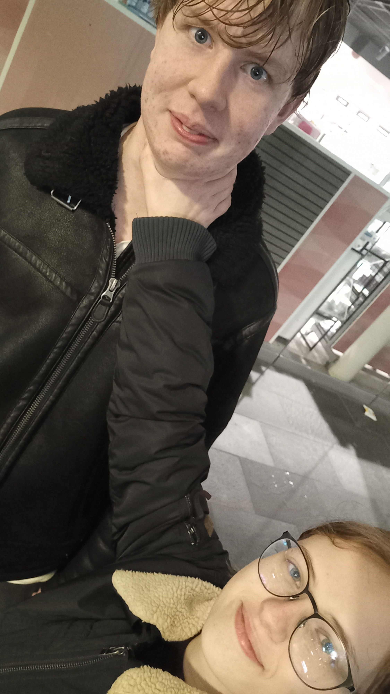
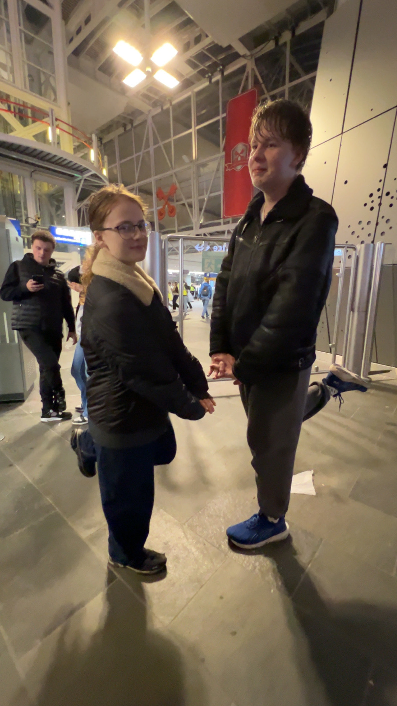
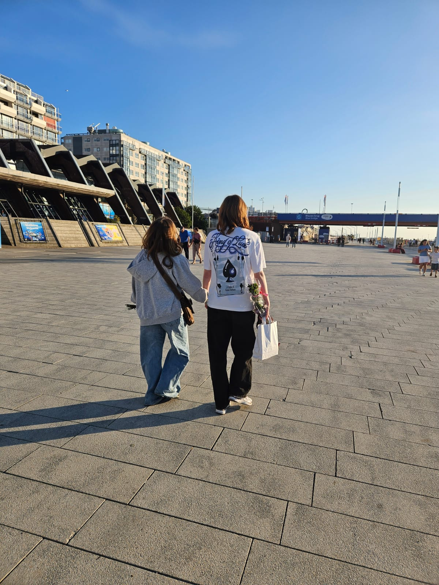
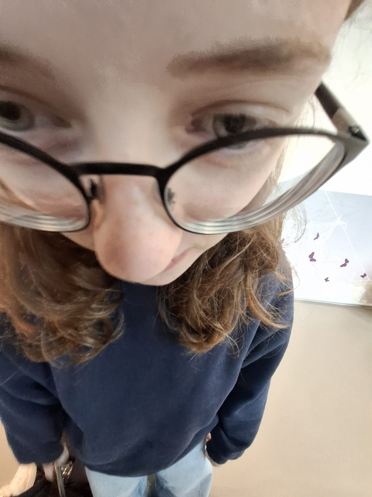
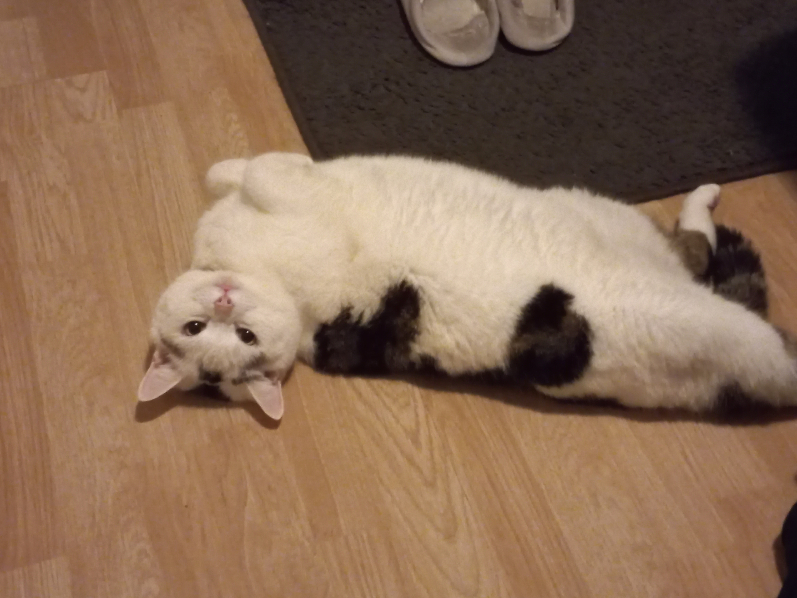
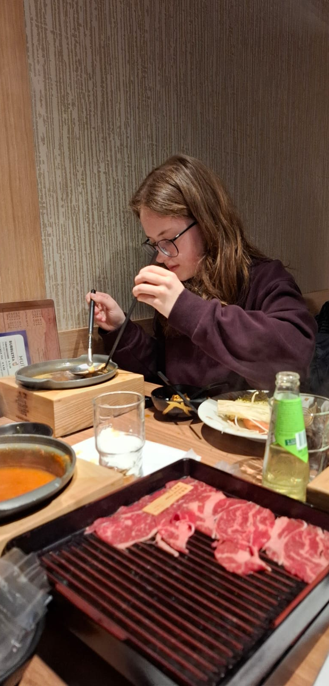

Who am I?
Heyheyy, ik ben Iris!! Ik ben 16 jaar oud en zit inmiddels al 5 jaar lang op ISW Hoogeland. Vorig jaar had ik examen gedaan op mavo niveau en dacht dat een havo diploma er ook nog wel bij kon. In mijn vrije tijd doe ik best wel veel dingen, maar om dat te lezen moet u naar de Hobbies pagina. Ook luister ik heel graag naar muziek, het is een van de dingen die mij comfort geeft. Mijn favoriete kleur is een soort donker blauw, het is een erg mooie kleur. Vroeger deed ik ook aan de sport boulderen en ik heb dat ook voor 2 jaar lang gedaan, maar vanwege problemen met mijn schouder moest ik helaas stoppen er mee. Ik heb ook nog een zus waar ik heel close mee ben, ze heet Melissa en is 22 jaar oud.
Ik heb een kat die Bollie heet, hij is al bijna 10 jaar oud (Hij is een beetje dik). Hij houdt niet echt van knuffelen enzovoort, maar voor de rest is hij wel aardig tegen bijna iedereen. Heb hem al sinds 2016.
Ik heb ook wel best veel vrienden, maar mijn closest vriend is Ruben. Hem heb ik ontmoet op school toen we beide in de eerste zaten. Toen deden we nog mavo/havo.Onze core memory is dat toen we voor het eerst hadden ontmoet, dat ik hem met een stok had geslagen en dat er een week later nogsteeds een afdruk was (vraag niet hoe ahahah). Ook hebben wij best veel inside jokes. We praatten toen niet echt super veel, maar sinds vorig jaar zijn we erg close en ik ben erg blij met hem. In mijn ogen is hij een soort broer. Door hem heb ik ook indirect (door zijn broertje) mijn partner ontmoet en met haar heb ik al een paar maandjes, daar ben ik erg dankbaar voor. Inmiddels kennen wij elkaar iets meer dan 5 jaar en hij zit nu op een andere school, het is raar om hem niet meer elke dag te zien, mis dat wel echt.
Foto's
     